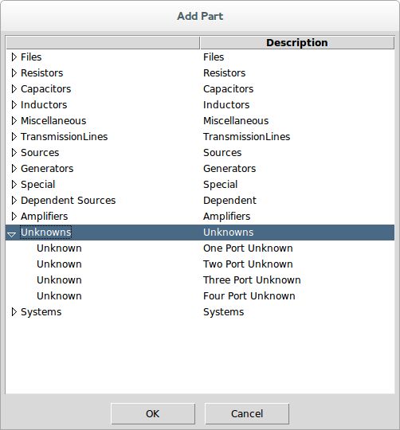

Prev
Add Stim
Up
Parts
Add System
Next
Add Unknown
Dialog
Main Schematic Dialog↑
Menu System
Parts↑
▸ Add Unknown
Navigation
Alt+P,U
Key Binding
None
Toolbar
None
Availability
Always
This adds a
Unknown↓
to the schematic for use only in
Deembedding↑
applications.
See
Unknowns↑
.
This command is a shortcut which is the same as invoking
Add Part↑
and selecting the Unknowns category.

Prev
Add Stim
Up
Parts
Add System
Next